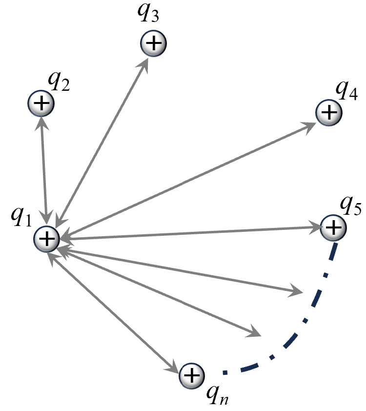

Potential energy, in general, represents the ability of a system to do work due to
its configuration. For any conservative force, potential energy is defined as the
negative of the work done by that force. For example, if gravitational forces
perform positive work during a process, the gravitational potential energy of the
system decreases accordingly.
Similarly, in the case of electrostatic forces, the change in electrostatic
potential energy of a system of charges during a process is defined as the negative
of the work done by electrostatic forces on the system. When charges are separated
by infinite distances, their interactions become negligible, and the potential
energy is conventionally set to zero. Thus, for any process:
If, in the initial state, the charges in the system were infinitely separated,
making the initial potential energy zero, then:
\(\qquad \text{P.E.} = -W_{\text{Electrostatic from }\infty}\)
In words,
The potential energy of a system of charged particles is the negative of the work
done by electrostatic forces in assembling the system from infinite separation.
To understand better about the potential energy of system of charges, consider
the
following systems:
Two Particle System
Consider two charges \( q_1 \) and \( q_2 \) separated by \(
x \). To find the change potential energy of the system for a change in
separation, we shall calculate the work done by electric field in the
process. Since the force of repulsion between the charges depends on the
separation between the particles, we require integration to find the
total work. This is shown in following diagram:
Diagram: Displacement \( \vec{dx} \) of charge \( q_2 \) when
the
position is \( \vec{x} \).
The work done \( dW \) by the
electrostatic force during this displacement of \(\vec{dx}\) is given
by:
\(\qquad
dW = \vec{F} \cdot \vec{dx}
\)
The electrostatic force \( F \) between the charges is given by
Coulomb's law. So,
\(\qquad
dW = \dfrac{k q_1 q_2}{x^2} \, dx
\)
To find the total work \( W \) required to displace the charge from \(
r_1
\) to \( r_2 \), we integrate \( dW \) from \( x = r_1 \) to \( x = r_2
\):
\(\qquad
W = \displaystyle\int_{r_1}^{r_2} \dfrac{k q_1 q_2}{x^2} \, dx
\)
Evaluating the integral:
\(\qquad
W = k q_1 q_2 \left[ -\dfrac{1}{x} \right]_{r_1}^{r_2}
\)
\(\Rightarrow\quad
W = - k q_1 q_2
\left( \dfrac{1}{r_2} - \dfrac{1}{r_1} \right)
\)
The change in potential energy \( \Delta U \) is the negative of the
work done by the electrostatic forces:
To find the potential energy \( U \) of the system of two charges
separated by \(r\), we can find the change in potential energy of system
starting from infinite separation (when potential energy is zero) to the
given separation \(r\). Thus,
\(\qquad
U-0 = k q_1 q_2 \left( \dfrac{1}{r}-\dfrac{1}{\infty} \right)
\)
Therefore, the total potential energy \( U \) of the two-particle system
is:
\( U = \dfrac{1}{4\pi\varepsilon_0}\dfrac{q_1 q_2}{r} \)
Three Particle System
Now, consider adding a third charge \( q_3 \) to the system
of charges \( q_1 \) and \( q_2 \). The charge \( q_3 \) is
placed near this set and is displaced by a small amount \(
\vec{dx} \). The work done \( dW \) during this displacement
involves the interactions between \( q_3 \) and both \( q_1
\) and \( q_2 \).
Diagram: Displacement \( \vec{dx} \) of charge \(
q_3 \) in the presence of charges \( q_1 \) and \(
q_2 \).
The infinitesimal work done \( dW \) by the electrostatic
forces during this displacement \( \vec{dx} \) is given by:
This expression represents the changes in potential energy
of the pairs \( q_1 \)-\( q_3 \) and \( q_2 \)-\( q_3 \).
To find the total change in potential energy \( \Delta U \)
as \( q_3 \) is brought from infinity to its final position,
we integrate over the path of \( q_3 \):
Here, \( U_{13} \) represents the potential energy between
charges \( q_1 \) and \( q_3 \), and \( U_{23} \) represents
the potential energy between charges \( q_2 \) and \( q_3
\).
Thus, the change in potential energy when building the
system from two charges to three charges is given by:
Since the initial system of two charges \( q_1 \) and \( q_2
\) already has potential energy due to their interaction,
the final potential energy \( U_f \) of the three-charge
system is the sum of the initial potential energy \( U_i \)
and the change in potential energy \( \Delta U \):
Each term on the right-hand side represents the potential
energy of interaction between a particular pair of charges.
This is illustrated below:
Diagram: Interactions in a system of \( q_1 \), \(
q_2 \), and \( q_3 \).
Many Particle System
Building upon the concept of potential energy in two and three-particle
systems, we can extend our analysis to systems containing multiple
charges. Understanding the potential energy in a many-particle system
requires accounting for the interactions between every unique pair of
charges.
For a system of three charges \( q_1 \), \( q_2 \), and \( q_3 \)
separated by distances \( r_{12} \), \( r_{13} \), and \( r_{23} \), the
total potential energy \( U \) is the sum of the potential energies of
each unique pair:
Extending this to four charges \( q_1 \), \( q_2 \), \( q_3 \), and \(
q_4 \), the total potential energy \( U \) includes all unique pairwise
interactions:
For a system containing \( n \) charges \( q_1, q_2, \ldots, q_n \),
each charge interacts with \( (n-1) \) other charges. However, this
approach counts each interaction twice (once for each pair \( (i, j) \)
and \( (j, i) \)). To account for this double-counting, we include a
factor of \( \dfrac{1}{2} \) in the summation. These interactions are
shown in diagram below:

Diagram: Interactions among multiple charges in a system.
Therefore, the total potential energy \( U \) of an \( n \)-particle
system is given by:
\(\qquad
U = \dfrac{1}{2} \sum_{\substack{i=1 \\ i \neq j}}^{n} \dfrac{k q_i
q_j}{r_{ij}}
\)
Here:
- \( k \) is Coulomb's constant.
- \( q_i \) and \( q_j \) are the magnitudes of the charges.
- \( r_{ij} \) is the distance between charges \( q_i \) and \( q_j \).
The factor of \( \dfrac{1}{2} \) ensures that each unique pairwise
interaction is counted only once in the total potential energy.
The principle of conservation of mechanical energy states that in the absence of
dissipative forces (like friction or air resistance), the total mechanical energy
(kinetic energy + potential energy) of a system remains constant throughout its
motion. This principle is crucial in understanding various electrostatic phenomena
where charged particles move under the influence of electric forces.
The following examples illustrate the application of this principle in
electrostatics:
Illustrative Example 1: Two Identical Charges Released from
Rest
Two identical charges, each with charge \( q \) and mass \( m \), are
held at rest separated by a distance \( r \). Upon release, determine
the speed of each charge when the separation doubles to \( 2r \).
Solution
Initially, the system has potential energy \( E_i = k \dfrac{q^2}{r} \)
and no kinetic energy since the charges are at rest. When the charges
move apart to a separation of \( 2r \), the potential energy becomes \(
E_f = k \dfrac{q^2}{2r} \), and each charge gains kinetic energy \(
\dfrac{1}{2}mv^2 \).
Conservation of energy dictates that the initial potential energy equals
the final potential energy plus the total kinetic energy:
\(\qquad
E_i = E_f + 2 \left( \dfrac{1}{2}mv^2 \right)
\)
Substituting the values:
\(\qquad
k \dfrac{q^2}{r} = k \dfrac{q^2}{2r} + mv^2
\)
Solving for \( v \):
\(\qquad
mv^2 = k \dfrac{q^2}{2r} \implies v = \sqrt{\dfrac{k q^2}{2 m r}}
\)
Illustrative Example 2: Charges at Equilateral Triangle
Vertices
Three identical charges, each with charge \( q \) and mass \( m \), are
placed at the vertices of an equilateral triangle with side length \( a
\). If the triangle uniformly expands so that each side becomes \( 2a
\), determine the speed of each charge after expansion.
Solution
The initial potential energy of the system is calculated based on the
three pairs of charges:
\(\qquad
U_i = 3k \dfrac{q^2}{a}
\)
After expansion, the potential energy becomes:
\(\qquad
U_f = 3k \dfrac{q^2}{2a}
\)
The change in potential energy is:
\(\qquad
\Delta U = U_f - U_i = -\dfrac{3k q^2}{2a}
\)
This loss in potential energy converts into kinetic energy:
\(\qquad
K_f = \dfrac{3k q^2}{2a}
\)
Since there are three identical charges sharing the kinetic energy
equally, each charge has kinetic energy \( \dfrac{1}{2}mv^2 \).
Therefore:
\(\qquad
3 \times \dfrac{1}{2}mv^2 = \dfrac{3k q^2}{2a} \implies v =
\sqrt{\dfrac{k
q^2}{m a}}
\)
Illustrative Example 3: One Charge Released from
Rest
Three identical charges, each with charge \( q \) and mass \( m \), are
placed at the vertices of an equilateral triangle with side length \( a
\). Two of the charges are fixed, and the third charge is released from
rest. Determine the speed of the movable charge when it moves infinitely
far away from the fixed charges.
Solution
Initially, the potential energy of the movable charge due to the two
fixed charges is:
\(\qquad
U_i = 2k \dfrac{q^2}{a}
\)
When the movable charge moves infinitely far away, the potential energy
becomes:
\(\qquad
U_f = 0
\)
The change in potential energy is:
\(\qquad
\Delta U = U_f - U_i = -2k \dfrac{q^2}{a}
\)
This loss in potential energy converts into kinetic energy of the
movable charge:
\(\qquad
\dfrac{1}{2}mv^2 = 2k \dfrac{q^2}{a}
\)
Solving for \( v \):
\(\qquad
v = \sqrt{\dfrac{4k q^2}{m a}}
\)
Note: Only the potential energy interactions involving
the movable charge are considered, as the potential energy between the
two fixed charges remains unchanged during the process.
Potential Energy of a Particle:
In a system where only one charge moves while the others remain fixed, the system's
potential energy changes solely due to the interactions involving the moving charge.
These interactions are often simplified and referred to as the "potential energy of
the particle." However, it is crucial to recognize that potential energy is
inherently a property of the entire system's interactions, not just a single
particle.
Mathematically, the potential energy \( U \) of the
system can be expressed as the sum of the potential energies arising from each
interaction between the movable charge \(q\) and the fixed charges
\(q_1,\,q_2,\,q_3...q_n\):
\(\qquad U = \sum_{i=1}^{n} k \dfrac{q_i q}{r_i}\)
Also in terms of work done by electric field,
The electrostatic potential energy is defined as the negative of the work done by
the electric field in bringing the charge from infinity to that point.
Since the electrostatic force is a conservative force, the
work done in moving a charge between two points is independent of the path taken.
Following examples are helpful to understand the potential energy of a particle.
Illustrative Example 4: Potential Energy of a Particle in a
Square Configuration
Four identical charges, each with charge \( q \) and mass \( m \), are
placed at the corners of a square with side length \( a \). Determine
the electrostatic potential energy of one of the charges due to the
other three charges.
Solution
To calculate the potential energy of one charge in the square
configuration, we consider the interactions between this charge and the
other three charges.
Since, two charges are present at a distance \(a\) while one of the
charge is at a distance \(\sqrt{2}a\),
\(\qquad
U_{\text{total}} = k \dfrac{q^2}{a} + k
\dfrac{q^2}{\sqrt{2}a} + k \dfrac{q^2}{a}
\)
Therefore, the electrostatic potential energy of one charge in the
square configuration is:
\(\qquad
U = \dfrac{k q^2 (4 + \sqrt{2})}{2a}
\)
Illustrative Example 5: Potential Energy of a Particle at
the Center of a Uniformly Charged Ring
A uniformly charged ring has a total charge \( Q \) and radius \( R \).
A point charge \( q \) is placed at the center of the ring. Determine
the electrostatic potential energy of the point charge due to the ring.
Solution
To calculate the electrostatic potential energy \( U \) of the point
charge \( q \) placed at the center of a uniformly charged ring, we
first calculate the potential energy \(dU\) of \(q\) with an
elemental charge \(dQ\) on the ring. Then we perform integration to get
total potential energy of \(q\). Thus,
\(\qquad dU=k\dfrac{qdQ}{R})
\(\qquad U=\displaystyle\int_0^Q k \dfrac{qdQ}{R})
Therefore, the potential energy of the point charge \( q \) at the
center of the uniformly charged ring is:
\(\qquad U=k\dfrac{qQ}{R})
Previously, we defined the potential energy of a charged particle at a point as the
negative of the work done by an electric field in bringing a unit positive charge
from infinity to that location. Building on this concept, the electrostatic
potential at a point is defined as the potential energy per unit charge of a
particle placed there. In other words,
The electrostatic potential at a point is the negative of the work done by the
electric field to bring a unit positive charge from infinity to that point.
Therefore, electrostatic potential is a property of a specific location in space
that represents the potential energy per unit charge a charge would have if placed
at that point. This means that the electrostatic potential quantifies how much
potential energy is available to a charge at a given position within an electric
field.
The electrostatic potential \( V \) at a point located at a distance \( r \) from a
point charge \( Q \) is a measure of the electric potential energy \(U\) per unit
charge for a sample charge \(q\) at that location.
\(\qquad
U = \dfrac{1}{4\pi\varepsilon_0} \dfrac{qQ}{r}
\)
The potential \( V=\dfrac{U}{q} \) is mathematically expressed as:
\(
V = \dfrac{1}{4\pi\varepsilon_0} \dfrac{Q}{r}
\)
The potential is positive if the point charge \( Q \) is positive, indicating that
work must be done against the electric field to bring a positive test charge closer
to \( Q \). Conversely, the potential is negative if \( Q \) is negative, meaning
that work is done by the electric field when bringing a positive test charge closer.
We observe here that the electrostatic potential \( V \) is a scalar quantity
having SI unit of Joule/Coulomb, often written as Volt (V). To find potential at a
point \(P\) due to a set of charges\( q_1, q_2, \ldots, q_n \), we calculate the
potential due to each charge and perform the scalar sum. For contineous charge
distributions, we require integration methods to know the potential at a point.
For continuous charge distributions, the potential at a point is obtained by
integrating over the entire charge distribution. If the charge distribution is
characterized by a linear charge density \( \lambda \), surface charge density \(
\sigma \), or volume charge density \( \rho \), the potential is given by:
\(\qquad V = \displaystyle\int \dfrac{1}{4\pi\varepsilon_0} \dfrac{dq}{r}\)
where \( dq \) is the infinitesimal charge element. These results are used for
deriving some standard results of electrostatic potential due to different charge
configurations in the next section.
Equipotential surfaces are imaginary surfaces in space where the electric
potential is the same at every point.
For example, in the case of a point charge \( q \), the electric potential at a
distance \( r \) from the charge is given by \( V = \dfrac{1}{4\pi \varepsilon_0}
\dfrac{q}{r} \). This means that the potential depends only on the
radial distance \( r \), and must remain constant on a sphere centered at the
charge. As a result, equipotential surfaces are concentric spheres centered on the
charge.
Equipotential surfaces provide valuable insight into the relationship between
electrostatic forces, electric field lines, and potential energy. Let us
consider what happens when a charge moves along an equipotential surface:
Since potential at a point represents potential energy per unit charge, the
potential energy of the charge remains constant when it moves along the
equipotential surface. This is because the potential does not vary across
the surface.
The work done by electrostatic forces is zero. If any work were done, the
electrostatic potential energy of the system would change, which contradicts
the definition of an equipotential surface.
Electric field lines are always perpendicular to equipotential surfaces. If
electric field lines were not perpendicular, there would be a component of
the electric field along the surface, resulting in non-zero work done by
electrostatic forces. This violates the fundamental property of
equipotential surfaces.
Thus, if in a given region, electric field lines are drawn we can find a surface
which is always perpendicular to the electric field lines to represent the
equipotential surfaces. Following are a few examples of equipotential surfaces
drawn:
Diagram: Equipotential Surfaces
due to point charges.
Diagram: Equipotential Surfaces
due long line charge
Diagram: Equipotential Surfaces
due large charged sheet.
Diagram: Equipotential Surfaces
due given electric field lines
If a positive charge is released in an electric field, it will naturally start to
travel
along the field lines with increasing kinetic energy and decreasing potential
energy. This implies that the potential energy of a positive charge decreases in the
direction of the electric field. Since potential is defined as potential energy per
unit charge, the potential must also decrease along the direction of the electric
field.
Furthermore, the electric field must always be perpendicular to equipotential
surfaces. If the field were not perpendicular, moving a charge along the
equipotential surface would result in work being done, which contradicts the
definition of equipotential surfaces. This perpendicularity ensures that the
electric field represents the direction of the steepest potential decrease. Hence,
Potential decreases in the direction of electric field. If potential doesn't
change along a perticular direction, the component of electric field along that
direction is zero.
If the electric field in a region is known, the potential difference between any two
points in that region is uniquely determined. This relationship arises from the
connection between electrostatic force and electrostatic potential energy, which
allows us to relate the electric field to the potential. The relationship is
expressed as follows:
The change in electrostatic potential energy \( \Delta U \) for moving a charge \( q
\) from point \( A \) to point \( B \) in the presence of an electric field \(
\vec{E} \) along a path \( \vec{ds} \) is given by:
\(\qquad dU = -\left(q\vec{E} \cdot \vec{ds}\right)\)
Dividing through by \( q \), we find the change in potential \( \Delta V \) between
points \( A \) and \( B \) as:
\( \Delta V = -\displaystyle\int_A^B \left(\vec{E} \cdot \vec{ds}\right)\)
This equation states that the potential difference between two points is the
negative line integral of the electric field along any path connecting those points.
Conversely, if the electrostatic potential \( V \) is known as a function of
position in space, the electric field \( \vec{E} \) can be determined by
differentiation. Let’s derive this step by step.
Consider a charge \( q \) being displaced along the \( x \)-axis by a small distance
\( dx \). The negative of the work done by the electrostatic force gives the change
in potential energy:
\(\qquad dU = -\left(q\vec{E} \cdot \vec{ds}\right)\)
During the displacement, the \( y \)- and \( z \)-coordinates remain constant, so \(
\vec{ds} = dx\hat{i} \). Substituting this:
\(\qquad dU = -\left(q(E_x\hat{i} + E_y\hat{j} + E_z\hat{k}) \cdot
dx\hat{i}\right)\)
Simplifying, since only the \( x \)-component contributes:
\(\qquad dU = -qE_x dx\)
\(\Rightarrow\quad dV = -E_x dx\)
\(\Rightarrow\quad E_x=-\dfrac{dV}{dx}\)
The expression \( dV = -E_x dx\) relates the infinitesimal change in potential
\( dV \) to the electric field component along the \( x \)-axis: \( E_x \), and a
small displacement \( dx \) along the \( x \)-axis. Also this relation is based on
the assumption that \(y\) and \(z\) co-ordinates of the particle remain unchanged.
Thus,
The partial derivative \( \dfrac{\partial V}{\partial x} \) simply means we are
calculating how the potential \( V \) changes when we vary only \( x \).
Similarly, considering displacements along the \( y \)- and \( z \)-axes, we derive:
The following illustrative examples further explain the relationship between
electric field and potential:
Potential when electric field is zero
Consider the electric field inside a uniformly charged hollow sphere. By
symmetry, the electric field inside the sphere is zero at every point.
As a result, the potential inside the sphere is constant because there
is no field to create a potential difference between any two points.
This constant potential equals the potential at the surface of the
sphere, which is calculated as:
\(\qquad V = \dfrac{1}{4\pi \varepsilon_0} \dfrac{Q}{R}\)
Here, \( Q \) is the total charge on the sphere, and \( R \) is its
radius. Since the electric field is zero inside, the potential remains
uniform and unaffected by changes in position within the sphere.
Potential difference for a constant electric field
Consider a uniformly charged infinite plane sheet, which creates a
constant electric field \( E \) perpendicular to its surface. The
potential difference \( \Delta V \) between two points at distances \(
x_1 \) and \( x_2 \) from the sheet is given by:
\(\qquad \Delta V = -E (x_2 - x_1)\)
This result follows directly from the relationship \( \Delta V = -\int
\vec{E} \cdot \vec{ds} \), where the electric field is constant and
parallel to the displacement vector.
Thus, the potential decreases linearly as we move away from the sheet,
with the direction of decrease being in the direction of the
electric field.
Potential and field due to a point charge
The potential \( V \) due to a point charge \( q \) at a distance \( r
\) is given by:
\(\qquad V = \dfrac{1}{4\pi \varepsilon_0} \dfrac{q}{r}\)
Differentiating this expression with respect to \( r \), the electric
field \( E \) is obtained as:
\(\qquad E = -\dfrac{dV}{dr} = \dfrac{1}{4\pi \varepsilon_0}
\dfrac{q}{r^2}\)
This calculation shows how the electric field is derived as the position
rate of change of the potential. The direction of the electric field is
radially outward for a positive charge and radially inward for a
negative charge, consistent with the direction of decreasing potential.
Standard results in electrostatic potential are useful for solving problems
involving different charge
configurations. Below are key results derived for specific cases.
Potential Due to a Uniformly Charged Ring
Consider a ring of radius \( R \) carrying a total charge \( Q \),
uniformly distributed along its circumference.
We wish to find the potential at a point
\( P \) on the axis of the ring, located a distance \( x \) from the
center of the ring.
Assume a point \( P \) on the axis as shown in the
diagram. Consider a small element of the ring
with charge \( dq \).
The distance from this charge
element \( dq \) to the point \( P \) is the
same for all elements of the ring due to symmetry, and is equal to
\(r = \sqrt{R^2 + x^2} \)
The infinitesimal potential
contribution is:
\(\qquad
dV = \dfrac{1}{4\pi
\varepsilon_0} \dfrac{dq}{\sqrt{R^2 + x^2}}.
\)
\(\qquad
V = \displaystyle\int_0^{Q} \dfrac{1}{4\pi \varepsilon_0}
\dfrac{dq}{\sqrt{R^2 + x^2}}.
\)
Since \( x \) is constant for
every element, the integration gives:
Consider a uniformly charged disc of radius \( R \) with surface
charge density \(\sigma\). We want the potential
at a point on the axis of the disc, a distance \( x \) from its
center.
Divide the disc into infinitesimal rings of radius \(
r \) and thickness \( dr \) as shown in the diagram.
Each ring has a charge \( dQ = \sigma (2\pi r dr) \).
From the previous derivation
for a ring,
the potential at a point on its axis is:
\(\qquad
dV = \dfrac{1}{4\pi \varepsilon_0} \dfrac{\sigma (2\pi r
dr)}{\sqrt{r^2 + x^2}}.
\)
\(\Rightarrow\quad
V = \displaystyle\int_0^R \dfrac{\sigma (2\pi r)}{4\pi
\varepsilon_0 \sqrt{r^2 +
x^2}} dr
\)
\(\Rightarrow\quad
V = \dfrac{\sigma}{2\varepsilon_0} \displaystyle\int_0^R
\dfrac{r}{\sqrt{r^2 + x^2}}
dr.
\)
Using a substitution \( u = r^2 + x^2 \) gives \( du = 2r dr \), so
\( r dr = \dfrac{du}{2} \). With proper limits,
\(\qquad V=\dfrac{\sigma}{2\varepsilon_0}
\dfrac{1}{2}\displaystyle\int_{x^2}^{R^2
+ x^2} \dfrac{1}{\sqrt{u}} du
\)
This is to be remembered that potential decreases as we move away
from the positively charged sheet.
Potential Due to a Uniformly Charged Sphere
1. Potential Due to a Hollow Sphere:
a) Outside the Hollow Sphere (\( r \geq R \)):
By symmetry and the shell theorem, for points outside a uniformly
charged hollow sphere of radius \( R \) carrying a total charge \( Q
\), the potential is the same as that due to a point charge \( Q \)
located at the center of the sphere:
\(\qquad V = \dfrac{1}{4\pi \varepsilon_0} \dfrac{Q}{r} \quad
\text{for } r \geq R.\)
b) Inside the Hollow Sphere (\( r < R \)):
For points inside a uniformly charged hollow sphere, there is no
electric field due to the spherical symmetry of charge distribution
(Gauss's law). Since the electric field is zero, the potential
remains constant throughout the interior of the sphere and is equal
to the potential on its surface:
\(\qquad V = \dfrac{1}{4\pi \varepsilon_0} \dfrac{Q}{R} \quad
\text{for } r < R.\)
Hence, for a hollow sphere, the potential is constant inside
the sphere and decreases inversely with distance outside the
sphere.
2. Potential Due to a Solid Sphere:
a) Outside the Solid Sphere (\( r \geq R
\)):
For points outside a uniformly charged solid sphere, the
charge distribution does not matter, and the potential
behaves as if the entire charge \( Q \) were concentrated at
the center of the sphere (by symmetry and the shell
theorem). The potential is given by:
\(\qquad V = \dfrac{1}{4\pi \varepsilon_0} \dfrac{Q}{r}
\quad \text{for } r \geq R.\)
b) Inside the Solid Sphere (\( r < R \)):
Inside a uniformly charged solid sphere, the potential
arises from the contributions of all charges within the
sphere. Using the volume charge density:
\(\qquad \rho = \dfrac{3Q}{4\pi R^3},\)
the charge enclosed within a smaller sphere of radius \( r
\) is:
\(\qquad V = \dfrac{1}{4\pi \varepsilon_0}
\dfrac{Q}{r}.\)
Inside (\( r < R \)):
\(\qquad V = \dfrac{1}{4\pi \varepsilon_0}
\dfrac{Q}{R}.\)
Solid Sphere:
Outside (\( r \geq R \)):
\(\qquad V = \dfrac{1}{4\pi \varepsilon_0}
\dfrac{Q}{r}.\)
Inside (\( r < R \)):
\(\qquad V = \dfrac{1}{4\pi \varepsilon_0}
\dfrac{Q}{R} \left(\dfrac{3}{2} -
\dfrac{r^2}{2R^2}\right).\)
This comprehensive discussion covers both hollow and solid
spheres, highlighting the distinctions in their potential
distributions inside and outside.
Potential Difference Due to an Infinite Line
Charge
Consider an infinite line charge with a uniform linear charge
density \( \lambda \). The electric field at a distance \( r \) from
the line charge is given by:
\(\qquad E = \dfrac{\lambda}{2\pi \varepsilon_0 r}\)
To find the potential difference \( \Delta V \) between two points
at distances \( r_1 \) and \( r_2 \) from the line charge, we use
the relationship between potential and electric field:
\(\qquad \Delta V = -\displaystyle\int_{r_1}^{r_2} \vec{E} \cdot
\vec{dr}\)
Since the electric field is radial, the integral simplifies to:
\(\qquad \Delta V = -\displaystyle\int_{r_1}^{r_2}
\dfrac{\lambda}{2\pi
\varepsilon_0 r} \, dr\)
Evaluating the integral:
\(\qquad \Delta V = -\dfrac{\lambda}{2\pi \varepsilon_0}
\displaystyle\int_{r_1}^{r_2} \dfrac{1}{r} \, dr =
-\dfrac{\lambda}{2\pi
\varepsilon_0} [\ln(r)]_{r_1}^{r_2}\)
Thus, the potential difference is linearly proportional to the
separation \( x_2 - x_1 \), with the direction of decrease aligned
with the electric field.